Versão para ler no celular em pé. Toque na foto da tela para ampliar. Na apresentação, cada tela vai aparecendo por cliques.
Tela 1 de 13
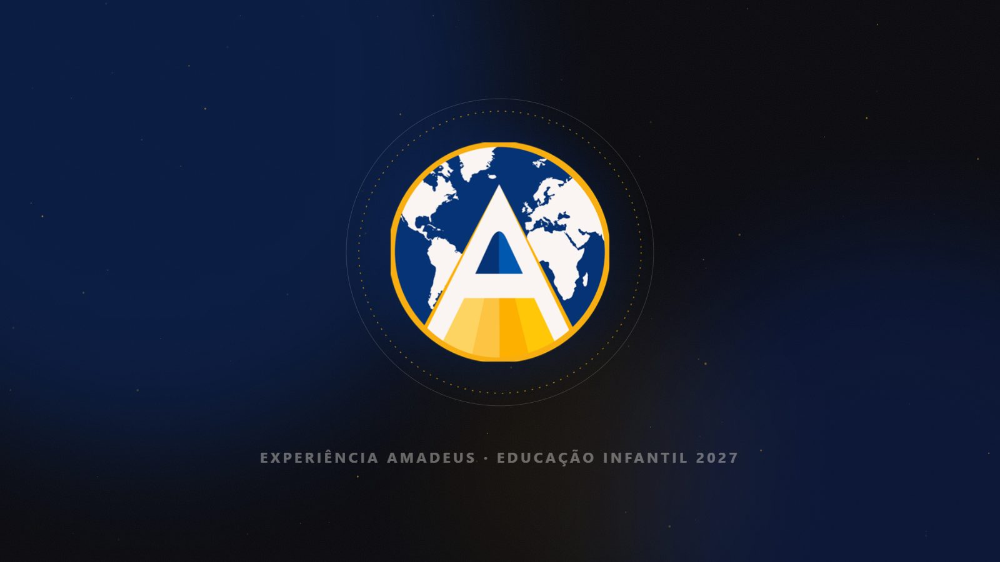
EXPERIÊNCIA AMADEUS · EDUCAÇÃO INFANTIL 2027
Tela 2 de 13
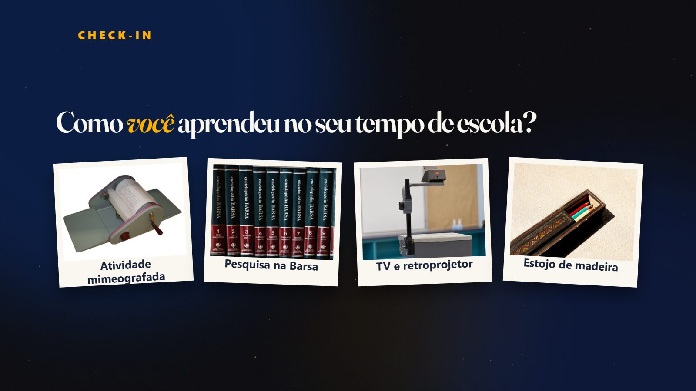
CHECK-IN
Como você aprendeu no seu tempo de escola?
Atividade mimeografada
Pesquisa na Barsa
TV e retroprojetor
Estojo de madeira
Tela 3 de 13
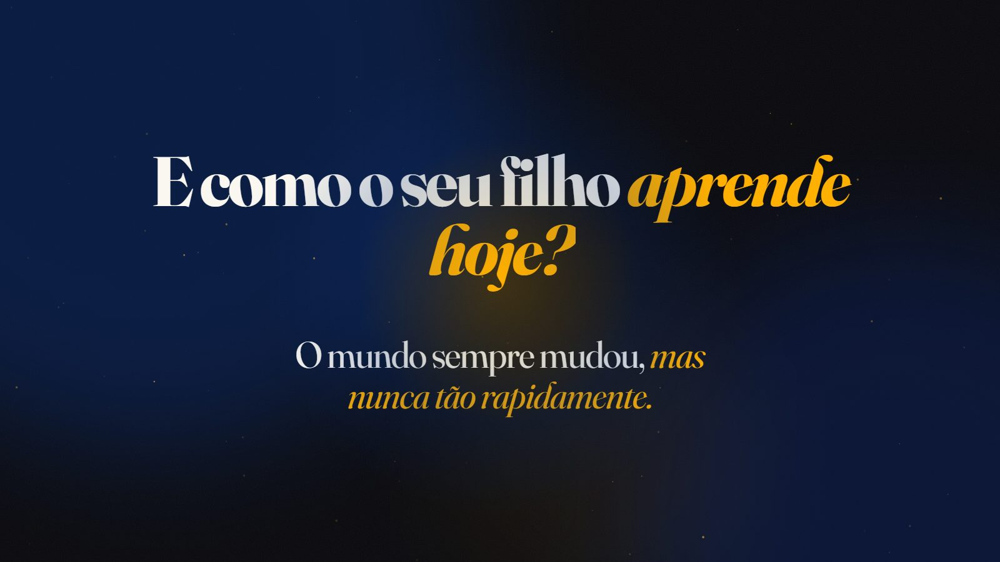
E como o seu filho aprende hoje?
O mundo sempre mudou, mas nunca tão rapidamente.
Tela 4 de 13
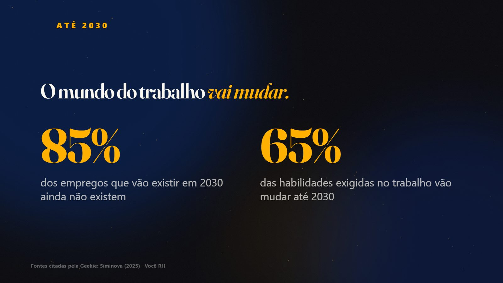
ATÉ 2030
O mundo do trabalho vai mudar.
85% dos empregos que vão existir em 2030 ainda não existem
65% das habilidades exigidas no trabalho vão mudar até 2030
Fontes citadas pela Geekie: Siminova (2025) · Você RH
Tela 5 de 13
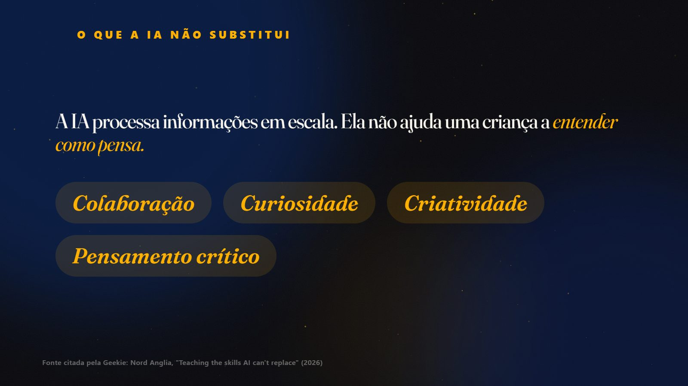
O QUE A IA NÃO SUBSTITUI
A IA processa informações em escala. Ela não ajuda uma criança a entender como pensa.
Colaboração
Curiosidade
Criatividade
Pensamento crítico
Fonte citada pela Geekie: Nord Anglia, "Teaching the skills AI can't replace" (2026)
Tela 6 de 13
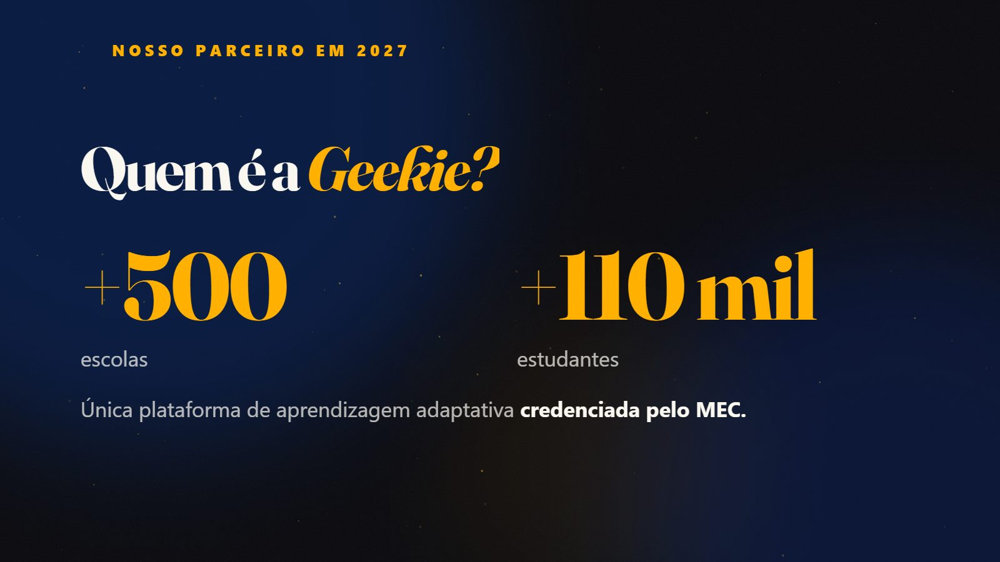
NOSSO PARCEIRO EM 2027
Quem é a Geekie?
+500 escolas
+110 mil estudantes
Única plataforma de aprendizagem adaptativa credenciada pelo MEC.
Tela 7 de 13
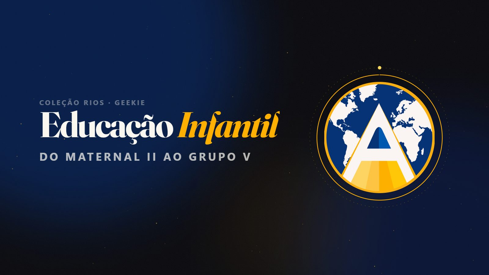
COLEÇÃO RIOS · GEEKIE
Educação Infantil
DO MATERNAL II AO GRUPO V
Tela 8 de 13
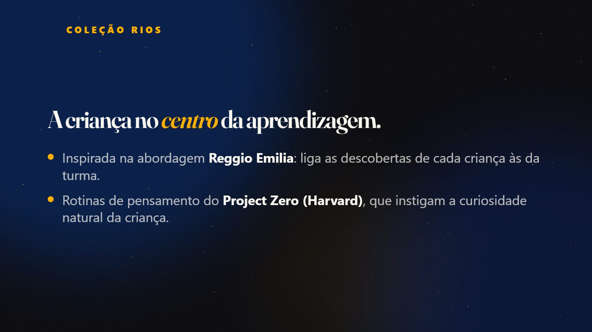
COLEÇÃO RIOS
A criança no centro da aprendizagem.
Inspirada na abordagem Reggio Emilia: liga as descobertas de cada criança às da turma.
Rotinas de pensamento do Project Zero (Harvard), que instigam a curiosidade natural da criança.
Tela 9 de 13
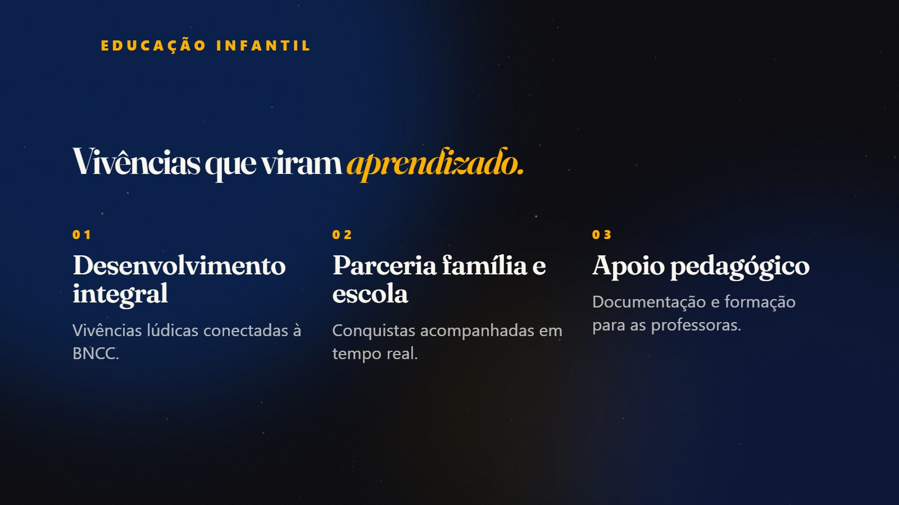
EDUCAÇÃO INFANTIL
Vivências que viram aprendizado.
01 Desenvolvimento integral Vivências lúdicas conectadas à BNCC.
02 Parceria família e escola Conquistas acompanhadas em tempo real.
03 Apoio pedagógico Documentação e formação para as professoras.
Tela 10 de 13
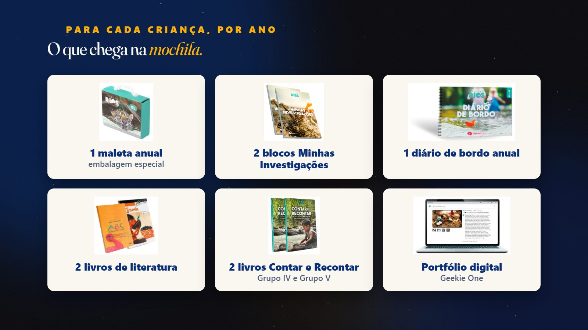
PARA CADA CRIANÇA, POR ANO
O que chega na mochila.
1 maleta anual embalagem especial
2 blocos Minhas Investigações
1 diário de bordo anual
2 livros de literatura
2 livros Contar e Recontar Grupo IV e Grupo V
Portfólio digital Geekie One
Tela 11 de 13
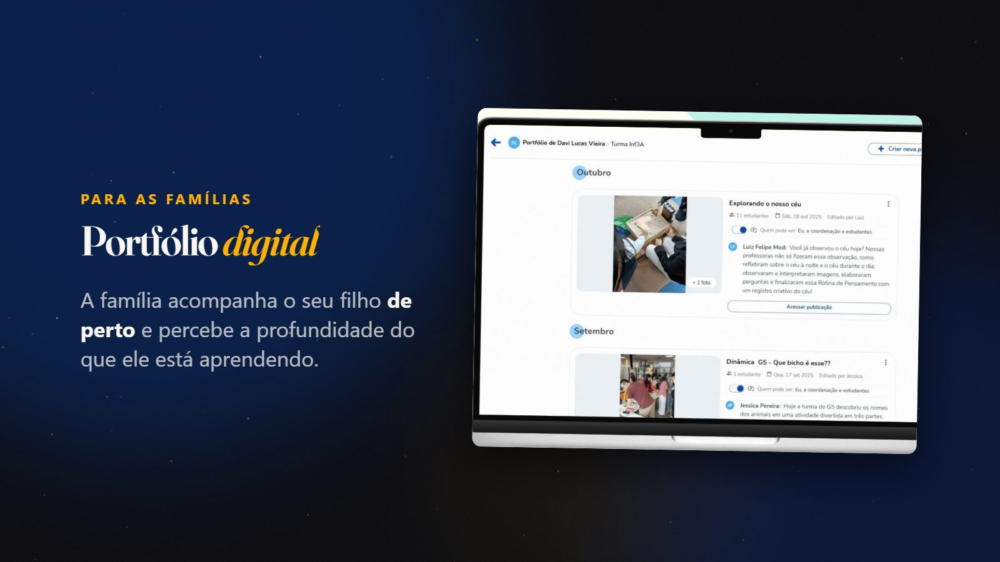
PARA AS FAMÍLIAS
Portfólio digital
A família acompanha o seu filho de perto e percebe a profundidade do que ele está aprendendo.
Tela 12 de 13
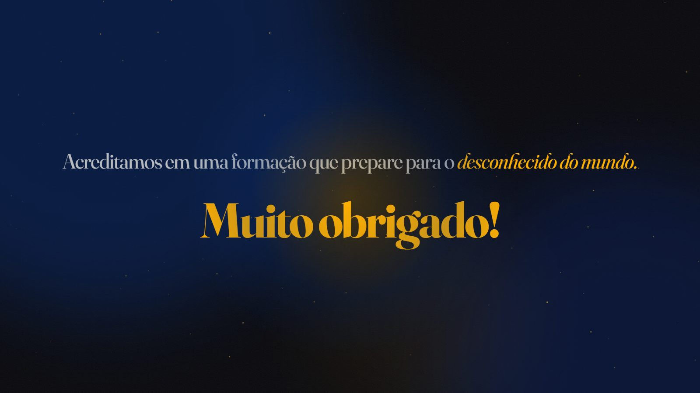
Acreditamos em uma formação que prepare para a descoberta do mundo.
Muito obrigado!
Tela 13 de 13
CENTRO EDUCACIONAL AMADEUS · 30 ANOS
Centro Educacional Amadeus · material da Geekie resumido para a Experiência Amadeus (10/10/2026).